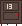
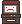

Last week the caretaker was clearing out the basement of the school. Behind a pile of broken chairs was a door. It isn't on any floor plan. The number on it says 13.
There are no windows inside, only an old arcade cabinet. Nobody knows who built it. The power cable is cut, but at night the screen still glows. The caretaker wrote down the message it showed.
The next morning there was a dirty USB stick on the caretaker's desk, with a starter kit on it. Nobody has been back to the basement since.
That's where you come in. For two days, you and your team are a crew that stays after school. Your job is to build the game the cabinet asks for, before Friday the 13th is over. At the end of that day, the door of Room 13 opens and every crew shows their game at The Opening. Everyone votes, and the winning crew gets a prize. What it is? That's a surprise.
IT IS SO QUIET DOWN HERE.
NOBODY PLAYS WITH ME ANYMORE.
BRING ME A NEW GAME
ON FRIDAY THE 13TH.
OR I COME UP THE STAIRS.
MAKE IT SCARY.
Build a horror game in Python. Two parts are required, the third is up to you:
Required
A text adventure, with scenes, choices and at least one ending. It can be very simple: a few rooms that lead to your minigames is fine.
Required
It's Friday the 13th. Make the player feel it. A school at night, footsteps behind you, a game that seems to know your name. Scary beats silly.
Your choice
Minigames, videos, sound. Use a lot, a little or none. A short story with six minigames counts. So does a long story with none.
Your game has to run on a normal laptop, and a stranger at The Opening has to be able to play it without your help. Think small first: a short game that works beats a big game that crashes.
The USB stick holds a starter kit. You don't have to use it: you can also build everything yourself. You get it at the briefing, with a README on how to install, run and change it. If you use it, get it running on every laptop at the kick-off.
A Python library for text adventures. You write scenes, choices and items, and the library runs the game in the terminal, in a dark horror style. Flickering lights, TV static and jump scares are built in.
A minigame is just a function that your story runs. The kit shows a very simple one that you could build yourself. There's also a Tetris game that you can change and add to.
Play a short clip from your game with one line of code. The kit has an example clip and a few sounds. The best clips are the ones you film yourself.
What's the heart of your game? Crews are grouped by progression in the study, so pick an idea that fits your crew. A simple game done well can beat a hard one done badly. The ideas below are only examples: mix them, change them, or come up with your own.
The story is the game.
A thin story, lots to play.
Your own footage makes it real.
Something else entirely.
Done with your main game, or a crew member who wants something different to work on? Pick a side quest. They're optional.
Film your own clip and play it in the game. A phone, a dark hallway and one good idea are enough.
Build your own minigame from scratch, in the terminal or in a pygame window.
Save the names of everyone who survived in a database and show them in the game. The Python SQL assignment (the second one in Web Applications) shows how to connect Python to a database with postgresqlite.
An HTML/CSS page for your game, with a title, screenshots and how to play. Show it at The Opening.
Let players save their progress to a file and load it again.
Use classes for your monsters, players or items. Only if your crew has started with OOP.
A big ASCII-art logo, a menu, and an ending screen worth reaching.
Creepy music and sound effects. Footsteps, doors, and a silence at just the right moment.
Yes, Friday the 13th. Room 13 chose the date.
| WED 11 · 12:42 | Briefing. Meet your crew, get this brief and the starter kit, then make your MoSCoW list. |
| THU 12 · 9:30 | Kick-off. Start building. |
| FRI 13 · 9:30 | Daily standup with your crew. |
| FRI 13 · 14:00 | Retrospective with your crew. |
| FRI 13 · 15:00 | Deadline, then The Opening, the vote and drinks. |
Everyone answers: What did I do yesterday? What will I do today? Is anything blocking me?
The crew answers: What went well? What could be better? What would we do differently next time?
Write down your answers. You need them for your report.
At 15:00 on Friday, the door opens. Every crew sets up their game on a laptop, and everyone walks around and plays each other's games. Have your game open and ready, with a short line on how to play next to it.
After that, you vote for the best game. You can't vote for your own crew. The winning crew gets a prize, and what it is stays a surprise until then. Vote on these four things:
It doesn't crash, a stranger can play it without help, and it feels finished.
The game does a lot, and all its parts work well together.
An idea, twist or style that no other crew came up with.
Did it get to you? The horror matters, not only as a name on the title screen.
Only one thing: your own report.md, uploaded to the End-of-quarter project assignment in LMS42. You don't need to hand in your code.
Write down your notes from the standup and the retrospective, and what you learned about working in a team. The deadline is Friday 20 November, but it's best to write it right after the retrospective, while you still remember everything.
Passing is almost a given if you put in the effort. You pass when: